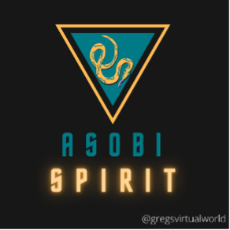
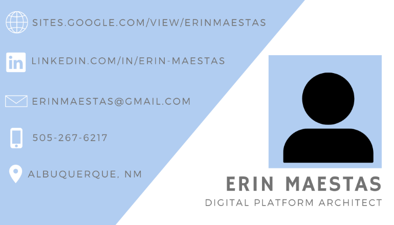
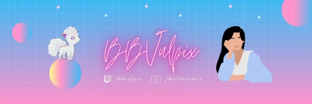
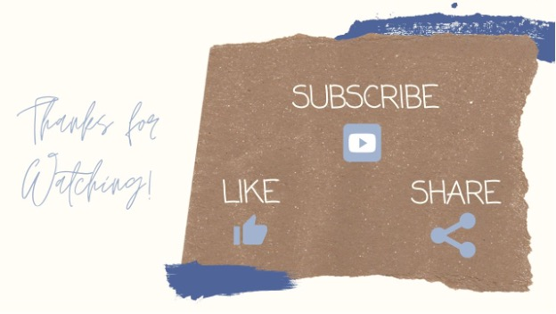
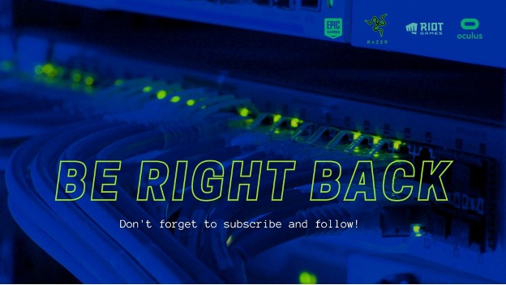

Overview
Portfolio
Welcome to my portfolio. Here you will find work in which I designed or developed either creatively, or jobs that were freelanced and I was able to be paid for. Below each photo you will find a quick excerpt on the idea behind it.

ASOBI SPIRIT TWITCH ICON
This Twitch Icon was developed for as a freelance project for someone based on Albuquerque. They were looking for a new icon to display while streaming video games on Twitch. They wanted to incorporate their python, and wanted to use a very ‘desert’ themed color palette.

Business Case for Friend
My friend had reached out with an idea to design a business card that was unique. She works in the tech field and wanted the card to stand out when networking and consulting. The person Icon was later replaced by a photo of herself. She said she received many compliments on it during her conference stay in San Francisco for DreamForce by Salesforce.

Twitch Header for Streamer
In this case I was commissioned by a friend to develop a Twitch header for their stream. They wanted to incorporate a vaporwave color scheme and wanted to use a cursive font. Here we incorporated her name icon as well as developing an icon of herself. It’s currently being used on her Twitch.

Outro for Youtube
I developed an Outro for a local vlogger that incorporated their color scheme. This is just a screen capture of their outro, this image is actually animated and moves along with their music of choice.

Be Right Back for Twitch
I developed several screens for a Twitch streamer to utilize in their stream deck. They wanted something that looked fun and technical for viewers to watch while they stepped away for a moment. This is a screen capture of a video file where the server lights are blinking and their music of choice is playing.